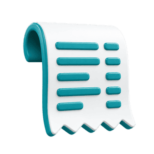
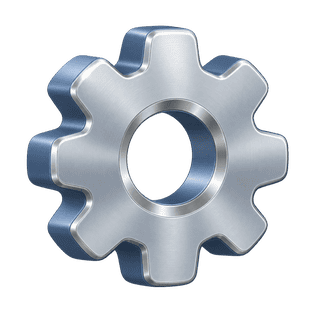

Printer setup
Configure how this device prints customer receipts.
Set up a printer for each device you use at the counter.

THERMAL RECEIPT PRINTERHow do you want to print?
Already have a thermal receipt printer? Let’s find the right setup for your printer and device. Choose a print method above, or open “Other printer / Not sure” below for guidance.
Set up AirPrint / Computer printing
- 1Connect your printer
On iPad, use an AirPrint-compatible printer on the same network. On a computer, install the printer driver and add the printer in your system settings.
- 2Choose your printer in the print dialog
When you print a test receipt below, select your printer and the matching paper size in the system print dialog. No PassPRNT app is needed.
- 3Check a sample receipt
Print a sample receipt and check that the text is readable and fits the paper.
After printing a test, check the actual receipt for readable text and the correct paper size. Confirm the result at the printer.
SET UP PASSPRNT
- 1Install Star PassPRNTInstall
Install once on this iPad to get started. The Install button opens the App Store.
- 2Open PassPRNT and choose your printer
Open PassPRNT to pair your printer over Bluetooth or your local network. You can select and manage your printer in the app.
If the receipt prints as random characters, match this to the EMU line on the printer self-test.
- 3Check a sample receipt
Sends a sample receipt to the printer and returns to the POS.
Choose “Print test receipt” above to check your printer.
Why install Star PassPRNT?
For the Star printer option, Nexora sends your receipt to the Star PassPRNT app, which prints it on the Star printer you select. Install the app on each iPad you print from, then open it and choose your printer before your first print.
For the Star app method, PassPRNT sends your receipt to the printer. With AirPrint / Computer printer, you print through the system print dialog.
Other printer / Not sure
Using an Epson, BIXOLON, MUNBYN, Xprinter, or another thermal printer? Find guidance for your device below.
- On iPad: check the manufacturer’s specifications for AirPrint support. If supported, connect your iPad and printer to the same network and choose AirPrint / Computer printer.
- On a computer: install the manufacturer’s driver and confirm the printer works from your browser, then choose AirPrint / Computer printer in Nexora.
- Your printer does not support AirPrint? You can use Nexora on a computer: install the manufacturer’s driver, add the printer to your system, then choose “AirPrint / Computer printer” to print a test receipt. To keep using your iPad, share the printer brand and model with Nexora support to check connection options. Direct printing from iPad to these brands requires an additional integration.
Find the right connection for your printer
Share these details when contacting Nexora support so we can guide you through your options:
- Brand and full model number, including the variant shown on the printer label.
- Connection type: USB, Ethernet, Wi-Fi, or Bluetooth.
- Device and browser used with Nexora, such as iPad with Safari or Windows with Chrome.

RECEIPT SETTINGSChoose what prints and how many copies.
Include retail products on the receipt.
Group services in a consistent order.
Number of receipts printed after a card payment.
Number of receipts for cash and every other method.